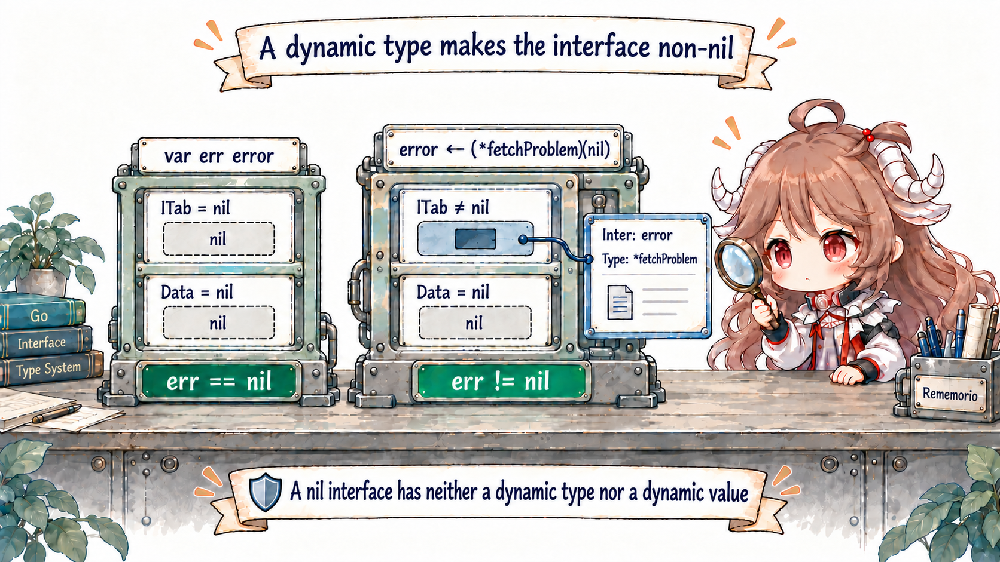
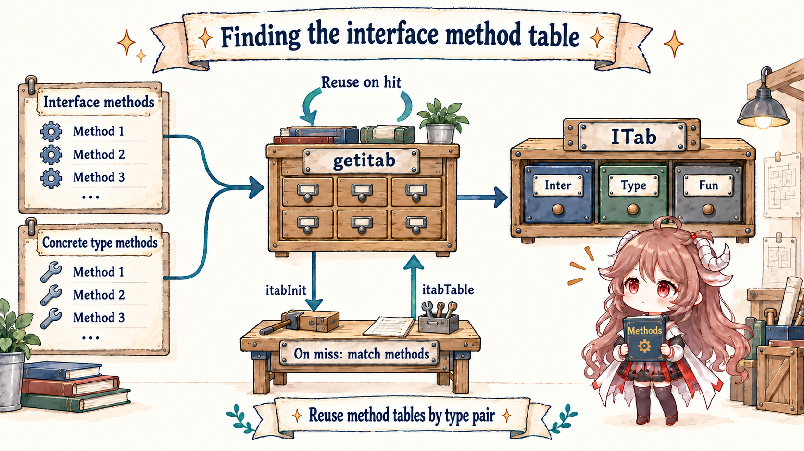
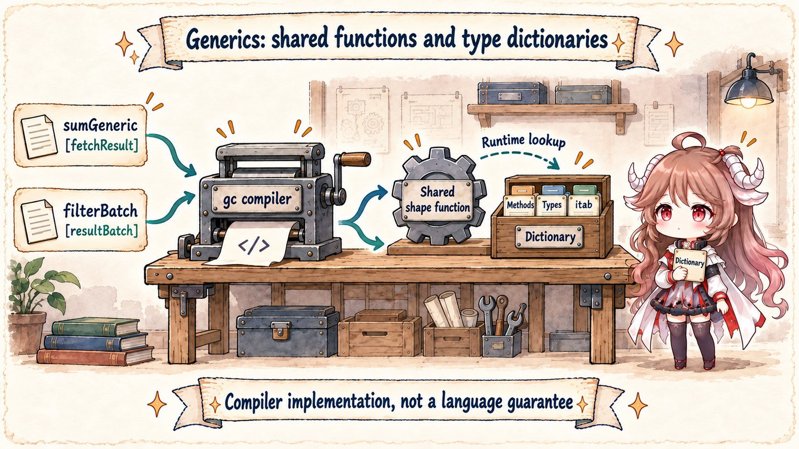
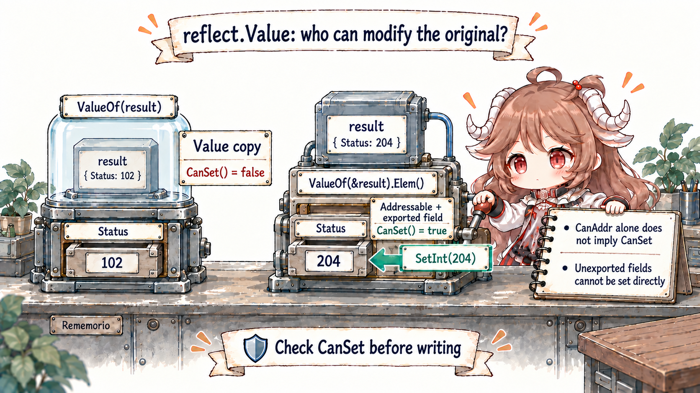

Reading contract: you do not need to know the two interface words or generic dictionaries. Choose by when the type becomes known: use generics for a family of types known before a call, an interface when the caller needs only a behavior, and reflection only when fields or types are discovered at runtime.
The first half teaches semantics through use cases; the second reads the implementation. Language evidence comes from the Go specification. Implementation evidence is pinned to the Go 1.26.0 tag: internal/abi/iface.go, runtime/iface.go, the compiler noder, and reflect/value.go.
1. Choose an Abstraction from Three Requirements
Suppose fetchd gains three requirements. First, a logging function accepts anything that can describe itself and
does not care about the concrete type; that fits a small interface. Second, one filtering function must handle both
[]fetchResult and a named resultBatch while preserving the input's static type; that fits generics.
Third, a JSON encoder must inspect fields and tags on arbitrary structs whose schemas are unknown until runtime; that is
reflection's job.
The same fetchResult batch crosses three boundaries:
log it: call only “describe yourself” → interface
filter successes: preserve the input slice type → generics
encode JSON: discover fields and tags at runtime → reflection
The three tools are not competing for one position. At each boundary ask whether the caller needs only behavior, whether
one algorithm must preserve a static type, or whether even the field set is unknown until runtime. Each source section below
answers only three questions: where type information lives, when checking happens, and whether failure is a compile error,
ok=false, or a panic.
These are not rungs from a basic to an advanced tool, and none is always faster. They place type knowledge at different times: an interface carries a concrete type at runtime, generics constrain a family of types at compile time, and reflection inspects and manipulates type descriptions at runtime.
| Abstraction | Selection point | Good fit | Main risk |
|---|---|---|---|
interface | Dynamic concrete type at runtime | A caller depends on behavior while implementations vary | Typed nil, boxing and escape, broad interfaces |
| Generics | Type arguments and type sets at compile time | One algorithm or structure serves a family of static types | Abstraction without reuse, constraints that leak structure |
| Reflection | Runtime types, names, or tags | Serialization, DI, and schema-driven frameworks | Invalid Values, unsettable fields, panics, cost and opacity |
The table compresses those three requirements into a choice. If a function merely calls describe(), accept the smallest useful interface. If one filter should preserve a named slice such as resultBatch, use type parameters. Only hand a field name to reflection when the schema truly arrives at runtime.
The official When To Use Generics reaches the same boundary: ordinary functions and interfaces express behavior; generics serve a shared implementation; reflection remains for runtime variation neither can express cleanly.
2. An interface value is not one pointer to an object
The specification describes an interface value by its dynamic type and dynamic value. In the runtime, an empty interface eface stores _type + data, while a method-bearing iface stores itab + data.
The itab connects the interface type, concrete type, and method entries. Once those two words are explicit, typed nil, assertions, and conversions stop looking like unrelated exceptions.
// runtime/runtime2.go
type iface struct {
tab *itab
data unsafe.Pointer
}
type eface struct {
_type *_type
data unsafe.Pointer
}2.1 Typed nil: Data can be nil while the type word is not
var p *fetchProblem makes p a nil pointer whose static type is *fetchProblem. Assigning it to error records *fetchProblem as the dynamic type and nil as the dynamic value.
An interface equals nil only when neither exists, so err != nil. That follows from the specification's interface-value and comparison rules, not from an incidental runtime quirk.

var empty any
fmt.Println(empty == nil) // true
var problem *fetchProblem
var err error = problem
fmt.Println(err == nil) // false
fmt.Printf("%T\n", err) // *main.fetchProblem
Do not let a function returning error place a nil typed pointer directly into the interface. Test the pointer at the return boundary and return a literal nil, or give the zero receiver complete semantics.
Reflection exposes the companion edge: reflect.ValueOf(nil) is the zero Value, while a typed nil produces a valid pointer Value that must be checked with IsNil.
2.2 getitab maps a type pair to a method table
Converting a concrete value to a non-empty interface needs an ITab for the pair “interface type × concrete type.” getitab begins with a lock-free lookup, then locks and retries before allocating persistent storage and publishing the result in itabTable.
A missing-method result can also be cached; a conversion that must panic may reinitialize the entry only to recover the precise missing method name.
type ITab struct {
Inter *InterfaceType
Type *Type
Hash uint32
Fun [1]uintptr
}
itabInit exploits the fact that interface and concrete method lists are both sorted. Two cursors merge them in O(ni+nt), writing concrete entry points into Fun[k]. A missing method leaves Fun[0] == 0 and returns its name.
The important result is that ordinary interface calls do not search methods by string: table construction or lookup establishes a fixed slot first.

2.3 Storing a value in an interface may copy it and may make it escape
The ITab answers “how to call”; Data still needs the dynamic value. General convT allocates storage with mallocgc and copies the value using typedmemmove.
The runtime also has specialized conversions for 16-, 32-, and 64-bit values, strings, and slices, and can reuse static storage for small integers or zero values. Actual heap allocation still depends on call shape, inlining, and escape analysis. Seeing mallocgc here does not mean every interface call allocates.
func convT(t *_type, v unsafe.Pointer) unsafe.Pointer {
x := mallocgc(t.Size_, t, true)
typedmemmove(t, x, v)
return x
}
A type assertion checks whether the dynamic type implements the target interface or equals the target non-interface type. assertE2I and typeAssert implement that edge and maintain assertion caches. A comma-ok failure returns the zero value and false; the single-result form panics.
Cache shape and helper choice are implementation details; programs depend only on assertion semantics.
3. Generics Retain a Family of Static Types
An interface parameter places each value in a common dynamic container. A generic call first chooses concrete type arguments. Its constraints are interface-shaped type sets that describe permitted types and operations.
In filterBatch[S ~[]E, E any], ~[]E accepts named types whose underlying type is []E. Returning S therefore preserves resultBatch instead of degrading it to []fetchResult.
type resultBatch []fetchResult
func filterBatch[S ~[]E, E any](values S, keep func(E) bool) S {
filtered := make(S, 0, len(values))
for _, value := range values {
if keep(value) {
filtered = append(filtered, value)
}
}
return filtered
}
That is a good generic boundary: the algorithm needs no runtime branch on element type, while callers retain their static type. If code only calls Read, Write, or describe on one value, replacing the interface with a lone type parameter usually complicates the signature. The official guidance explicitly keeps those behavior abstractions as interfaces.
3.1 The Current gc Implementation: Shape Body plus Dictionary
The Go specification does not require monomorphization, erasure, or dictionary passing. In Go 1.26.0, gc can select a shape for shared code and emit a runtime dictionary. Entries may include method expressions for type parameters, subdictionaries, runtime types, and itabs.
readerDict/writerDict read and write those entries, while shapify chooses shapes. They explain the current binary and profiles; they are not a supported ABI for application code.

Disabling inlining for the lab package and inspecting its symbols reveals both concrete dictionaries and shape functions:
...dict.sumGeneric[...fetchResult]
...dict.filterBatch[...resultBatch,...fetchResult]
sumGeneric[go.shape.struct {...}]
filterBatch[go.shape.[]fetchResult,go.shape.struct {...}]“Uses a dictionary” does not mean “slow on every call,” just as “has an itab” does not mean “allocates on every call.” Inlining, devirtualization, escape behavior, constraint operations, and CPU effects all matter. Optimize the observed hot path, not an abstraction's name.
4. Reflection Unpacks an Interface into a Value
The first law of reflection goes from interface to reflection object. ValueOf returns the zero Value for nil and otherwise uses unpackEface to recover type and data.
A reflect.Value stores typ_, ptr, and flag. Low flag bits encode Kind; other bits record read-only status, indirect storage, addressability, and method values. The second law, Interface(), packs a Value back into an interface.
type Value struct {
typ_ *abi.Type
ptr unsafe.Pointer
flag
}
packEface also exposes a subtle alias boundary. When exporting an addressable, indirect Value as an interface, reflect may copy it into fresh storage so later Value mutations cannot change the boxed value.
That is an implementation mechanism; callers should rely on the public addressability, settability, and export rules.
4.1 The Third Law: Mutation Requires a Settable Value
reflect.ValueOf(result) receives the struct copy stored in an interface. Its field is not addressable, so CanSet() == false. Passing &result and calling Elem() yields a Value pointing at the original variable and marks it addressable. An exported field with no read-only flag can then be set.
CanSet is essentially the test that flagAddr is present and neither read-only bit is.

func (v Value) CanSet() bool {
return v.flag&(flagAddr|flagRO) == flagAddr
}
func (v Value) Set(x Value) {
v.mustBeAssignable()
x.mustBeExported()
var target unsafe.Pointer
if v.kind() == Interface {
target = v.ptr
}
x = x.assignTo("reflect.Set", v.typ(), target)
if x.flag&flagIndir != 0 {
typedmemmove(v.typ(), v.ptr, x.ptr)
} else {
*(*unsafe.Pointer)(v.ptr) = x.ptr
}
}
Go 1.26 also provides generic reflect.TypeAssert[T](v). It is semantically equivalent to v.Interface().(T), but can use abi.TypeFor[T]() for more direct paths and avoid allocation when an interface assertion fails.
It makes the exit from reflection to a static type explicit; it does not remove validity, export, or settability checks.
5. Experiments Test Semantics, Not a Universal Ranking
interface_lab_test.go contains four repeatable checks: an interface retains its dynamic type and value; typed nil differs from nil; a generic filter preserves a named slice; and reflection mutates only an exported field reached through an addressable pointer.
cd go-runtime/examples/fetchd
go test -run 'Test(Interface|TypedNil|Generic|Reflection)'
go test -race ./...
go vet ./...
go test -run '^$' -bench BenchmarkAbstractionBoundaries -benchmemThe 64-element benchmark constructs its interface slice outside the timed loop. Both the generic constraint and pre-boxed interface calls report 0 allocs/op; reflection also allocates nothing per iteration but field-name traversal is substantially slower. In this one shape, the pre-boxed interface call is even slightly faster than the generic method constraint. That is exactly why generics should not be advertised as “faster interfaces.” Move boxing, slice construction, or an escape into the loop and the benchmark asks a different question.
| Evidence | What it answers | What it cannot answer |
|---|---|---|
| Specification | Dynamic types, assertions, comparison, and type-set semantics | How many code bodies this binary has |
| Runtime and reflect source | Go 1.26.0 layouts, caches, copies, and flags | A stable ABI for future versions |
| Compiler symbols | This build contains shapes and dictionaries | Every other call shares the same shape |
| Benchmark and allocs | Cost for a fixed input and call shape | A universal winner among abstractions |
6. Engineering Rules for fetchd
- Define small interfaces at the consumer. If the caller needs only
describe(), do not demand ten unrelated methods. - Eliminate typed nil at error boundaries. Return a genuine
nilwhen the pointer is nil. - Use generics for one implementation. Containers, filtering, reduction, and preserving named types are strong signals; one behavior call is not.
- Constrain necessary operations, not accidental structure. Prefer a method set over forcing callers to expose field layout.
- Keep reflection at an edge. Resolve fields, tags, or schemas once, then give the business loop a checked descriptor or static function.
- Validate every reflective write. Check validity, Kind, nil, addressability, settability, export status, and conversion.
- Bind performance claims to call shape. Inspect escape reports, allocations, profiles, and generated symbols before changing the abstraction.
The reusable conclusion is: an interface leaves “which concrete implementation” to runtime, generics admit a family of types to one compile-time algorithm, and reflection turns type structure itself into runtime data.
Choose by where the boundary lives, not by which syntax is newer. The next chapter makes fetchd terminate correctly by tracing request-context cancellation, timers, AfterFunc, causes, worker cleanup, and shutdown.
Source and documentation
- Go Specification: interface types and values
- When To Use Generics
- An Introduction To Generics
- The Laws of Reflection
- ABI interface and ITab layouts
- runtime.getitab
- runtime.itabInit
- interface conversion and assertion helpers
- gc runtime dictionaries
- gc shaping
- reflect.Value layout and interface conversion
- Interface and TypeAssert
- fetchd abstraction boundary lab